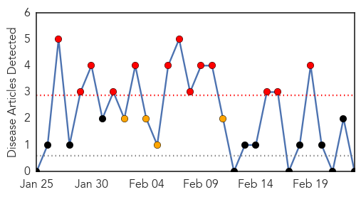
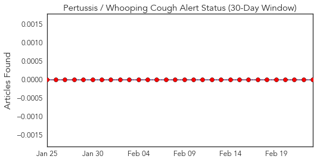
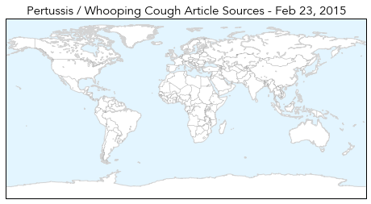
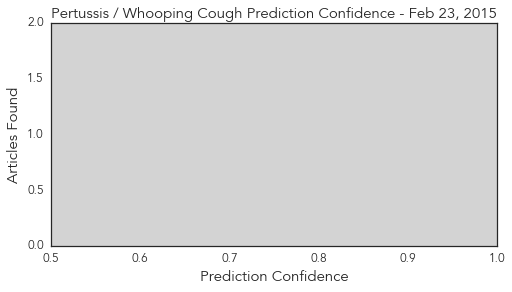
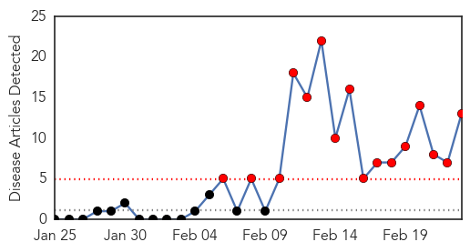
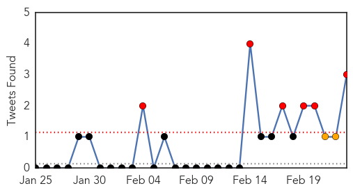
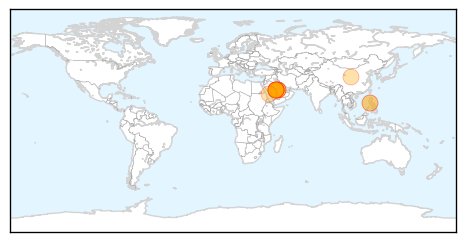
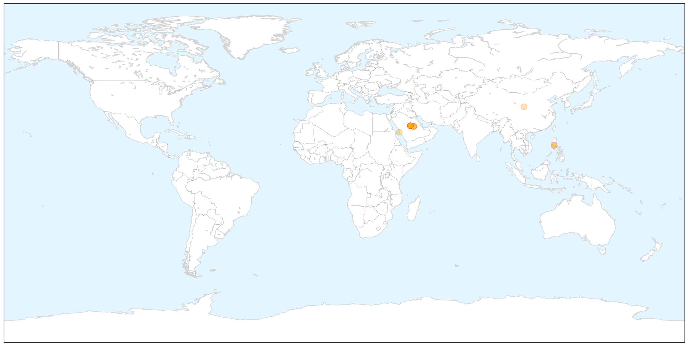
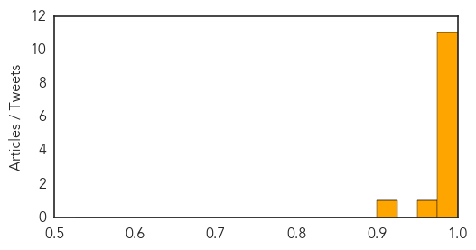

Pertussis
30-Day Web Trend
13 alerts, 4 warnings

30-Day Twitter Trend
0 alerts, 0 warnings

Article Locations

Article Confidences
Top Articles:
-
No articles found for Feb 23, 2015
Top Tweets:
-
No tweets found for Feb 23, 2015
MERS
30-Day Web Trend
16 alerts, 0 warnings

30-Day Twitter Trend
6 alerts, 0 warnings

Article Locations

X

Article Confidences
Top Articles:
- 1.000
- Critical Gaps in Knowledge about Deadly MERS virus, U.N. Reports
- 0.999
- UN experts warn of "critical knowledge gaps" on Saudi MERS virus
- 0.999
- Saudi MERS Virus Targeted in WHO Mission
- 0.999
- More progress needed to control the Middle East respiratory syndrome coronavirus (MERS-COV) in Saudi Arabia
- 0.999
- U.N. experts warn of 'critical knowledge gaps' on Saudi MERS virus
- 0.999
- Saudi Arabia not doing enough to combat MERS – WHO — RT News
- 0.998
- Health mission urges more Saudi measures to combat MERS
- 0.997
- Coronavirus toll hits 385 with two new deaths
- 0.997
- Health mission says Saudi needs to do more to combat MERS
- 0.997
- Saudi Arabia reports two more MERS deaths
- 0.993
- WHO calls for action over Mers virus
- 0.959
- Possible bird flu kills man in PH
- 0.907
- OFW suspected to have bird flu dies in Philippines
Top Tweets:
-
No tweets found for Feb 23, 2015